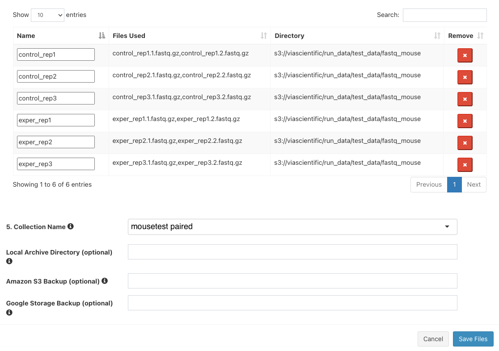

Expected learning outcome
To understand the basics of running a pipeline in Foundry by running the TE Transcripts analysis pipeline on sample mouse data.
Before you start
Please go to https://www.viafoundry.com and login into your account. If you have any issues logging in, please let us know (support@viascientific.com) and we will help to create an account for you.
Creating a Project
In Foundry, analysis is organized by project. Each run belongs to a project and a project can consist of multiple runs.
Once logged in, to create and configure a new project click on the Projects tab in the top menu and select Add a New Project button in the dropdown. In the pop-up, give the project a name (e.g. TE Transcripts Tutorial) and click save.

Attaching Pipeline to Project
To help with organization, pipelines used in a project are attached to that project.
Note: The same pipeline can be attached to multiple projects.
To attach a pipeline select the Pipelines tab and then click the Add Pipeline button.

Locate TE Transcripts, click on the Add button, and then close the window.

Creating a Run
Once the project is created and a pipeline is attached, you are ready to create a run:
-
Click the
Runbutton next to theTE Transcriptsentry in the table to load the "Run Page"
-
On the run page, under "Run Environment" select
viafoundry - In the Inputs section, next to
FASTQ Input, clickEnter File - In the files tab, click
Add Filebutton to enter new files. -
Next to "1. File Location", enter:
gs://via-scientific-nprd-bucket/viafoundry/run_data/test_data/fastq_mouse -
Click the magnifying glass icon. The box below will populate with files like so:
-
In the
3. Collection Typedropdown, selectPaired List -
Under
4. File Pattern, next toForward Pattern, enter.1. Similarly, enter.2forReverse Pattern.
-
Click
Add All Filesbutton. You should now see 6 entries below.
-
Next to
5. Collection Name, entermousetest paired. The final three boxes can be left blank. ClickSave Files - The "Select/Add Input File" screen will now have 6 entries. Click "Save".
- For "Library Type", select
pair - For "Genome Build", select
mouse - For "Groups file", click
Enter File -
In the "File Location", enter:
gs://via-scientific-nprd-bucket/viafoundry/run_data/test_data/fastq_mouse_metadata/groups.tsv -
Click
Save - For "Comparison file", click
Enter File -
In the "File Location", enter:
gs://via-scientific-nprd-bucket/viafoundry/run_data/test_data/fastq_mouse_metadata/comparisons.tsv -
Click
Save - Leave the rest of the inputs as defaults
- Click
Runin the top right and then selectStart. For this dataset, the TE Transcripts pipeline run typically takes several minutes to complete. - Navigate to the Log tab and click on log.txt to follow the progress of your run.
- Once the status bar in the top right changes from a blue "Running" status to a green "Completed" status go to the Report tab to see the final reports.
-
Click on
Deseq2to open the "Differential Expression" section. Select the first file on the left tab (exper_vs_control_DE.html). This is a differential expression report for the comparison. The report can be expanded to fit the full screen with the button on the top left.
-
Launch the
GSEA Explorerapplication by clicking the second file on the left tab (exper_vs_control_DE.Rmd) and then clickLaunch
Note: For the purposes of speeding up the runtime of this tutorial, the demo dataset has been downsampled to only include a few genes. Differential expression analysis graphs and Gene Set Enrichment Analysis graphs will look very sparse with this dataset.
Congratulations! You have run and tested the TE Transcripts pipeline on Foundry!